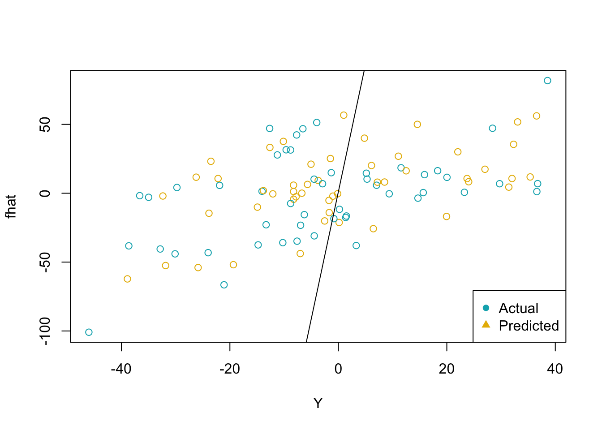

MSE <- matrix(0, ncol = 9, nrow = 1000)
c <- 0
for (j in seq(5,45, by = 5)) {
j <- j+1
c <- c + 1
for (i in 1:1000) {
X <- cbind(rep(1,50), matrix(rep(rnorm(45),50), nrow = 50, ncol = 45, byrow = FALSE))
Y <- X %*% runif(46,0,5) + rnorm(50)
Training <- as.data.frame(cbind(Y,X))
X <- cbind(rep(1,100), matrix(rnorm(45*100), nrow = 100, ncol = 45))
Y <- X %*% runif(46,0,5) + rnorm(100)
Test <- as.data.frame(cbind(Y,X))
Model <- lm(V1 ~ ., data = Training[, 1:j])
fhat <- predict(Model, newdata = Test)
}
}
summary(MSE) V1 V2 V3 V4 V5 V6
Min. :0 Min. :0 Min. :0 Min. :0 Min. :0 Min. :0
1st Qu.:0 1st Qu.:0 1st Qu.:0 1st Qu.:0 1st Qu.:0 1st Qu.:0
Median :0 Median :0 Median :0 Median :0 Median :0 Median :0
Mean :0 Mean :0 Mean :0 Mean :0 Mean :0 Mean :0
3rd Qu.:0 3rd Qu.:0 3rd Qu.:0 3rd Qu.:0 3rd Qu.:0 3rd Qu.:0
Max. :0 Max. :0 Max. :0 Max. :0 Max. :0 Max. :0
V7 V8 V9
Min. :0 Min. :0 Min. :0
1st Qu.:0 1st Qu.:0 1st Qu.:0
Median :0 Median :0 Median :0
Mean :0 Mean :0 Mean :0
3rd Qu.:0 3rd Qu.:0 3rd Qu.:0
Max. :0 Max. :0 Max. :0 colors <- c("#00AFBB", "#E7B800")
plot(Y, fhat, col = colors)
legend("bottomright", legend = c("Actual", "Predicted"),
col = c("#00AFBB", "#E7B800"),
pch = c(16, 17, 18) )
abline(a = X, b = fhat)